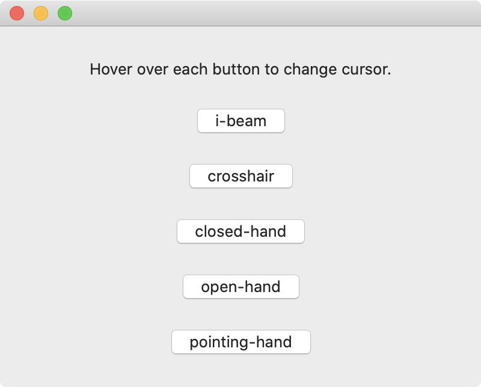

The mouse pointer (or cursor) is represented by an arrow on the screen. Different cursors are available in macOS to indicate actions that the user can take with the mouse. See the NSCursor documentation for a list of all the available cursors.

import SwiftUI
struct ContentView: View {
var body: some View {
VStack(spacing: 25) {
Text("Hover over each button to change cursor.")
// i-beam cursor
Button(" i-beam ") {}
.onHover(perform: { hovering in
hovering ? NSCursor.iBeam.push() : NSCursor.pop()
})
// crosshair cursor
Button(" crosshair ") { }
.onHover(perform: { hovering in
hovering ? NSCursor.crosshair.push() : NSCursor.pop()
})
// close-hand cursor
Button(" closed-hand ") { }
.onHover(perform: { hovering in
hovering ? NSCursor.closedHand.push() : NSCursor.pop()
})
// open-hand cursor
Button(" open-hand ") { }
.onHover(perform: { hovering in
hovering ? NSCursor.openHand.push() : NSCursor.pop()
})
// pointing-hand cursor
Button(" pointing-hand ") { }
.onHover(perform: { hovering in
hovering ? NSCursor.pointingHand.push() : NSCursor.pop()
})
}
.frame(width: 400, height: 300)
}
}
Swift Programming for macOS © 2025
Built by Gavin Wiggins